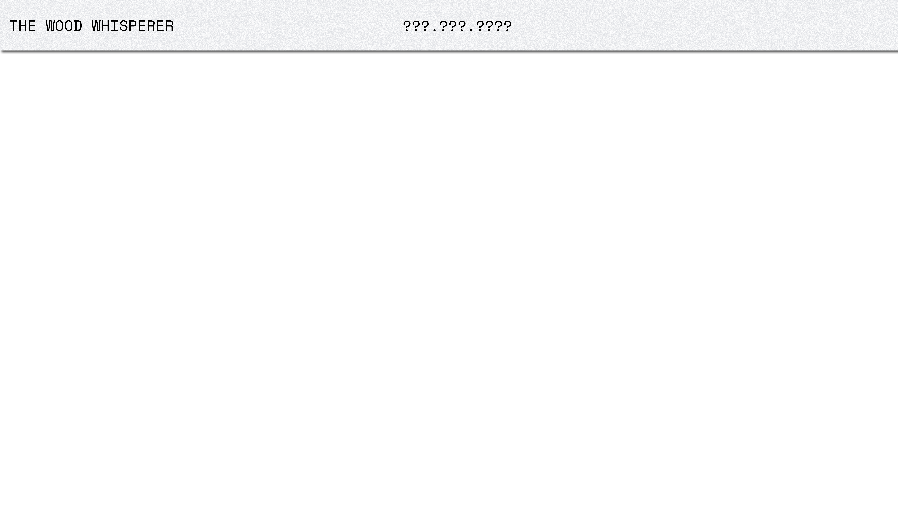
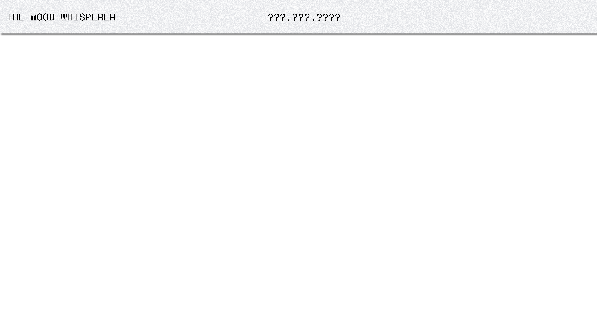

MAJOR EVENTS *
Sept.9th.2099
Aug.17th.2119
2137-2139
2160s
2170s
Diagnosed with Kleine
-Levin syndrome.
The policy of space
migration was approved.
Parents past away.
The space imigration
80% complete.
The space imigration
100% complete.
Sept.9th.2099
I knew this might sound crazy, but I couldn't stop writing this diary. I was diagnosed with Kleine-Levin syndrome, a rare syndrome that occurs during teenagers, and patients would fall asleep without realizing how low they sleep; it may last for days or months with no curing methods. It was weird for a genetic clone like me. I should be perfect, both human and product. My brain is capable of massive functioning, and I was designed to serve the family. But today, it felt like my soul was floating out of my body. I saw my mom crying outside the medical room, and I had never seen her cry before. My father was arguing with the doctor, and I could only read a few words from his mouth. It said, "return," "nonfunctioning," and "waste of money." And I decided to say nothing.
Sept.10th.2099
My mom saw my diary today, she asked me why I documented the file in a prehistoric way, and I told her I did not trust my mind anymore. I asked her if anything was wrong with me, and she answered nothing. I was left alone in this medical room. It was painted pale, with the smell of disinfectant fluid. I opened the computer inside my mind and illegally linked the hospitals' wifi, and I didn't want to be traced. I closed my eyes and prepared for the connection, and the record claimed that I slept for 20 days. I supposed that was why my father was angry with me. My family was considered dominant, everyone in that house represented wealth and power, and I assumed my absence disobeyed the family rule.
Oct.15th.2099
It was bored laying on the bed. I was functioning normally for the entire month, and I could go home the following week. I researched the company that produced me; they were sponsored by my father, located on another planet, I couldn't trace them.
Oct.18th. 2099
I was back home, but things changed. My father took a phone call today. He stared at me angrily and slapped the door on my face. He didn't want me there. I went upstairs, so my mom prepared some biscuits, orange flavor, my favorite. She was about to talk, but she didn't. She left the door behind and told me she would like to read me a story, Alice in Wonderland. She stopped me from searching that up, so I didn't. It was a story I couldn't understand; why would the Mad hat fall in love with Alice? And a raven doesn't look like a writing desk. My mom used to explain a lot, but these days she doesn't. Does she love me? I couldn't figure it out.
Oct.19th.2099
A private conversation was made between my parents earlier today. They argued about medications and fees and the space project. My father said I was a monster; I hacked into the classified document, my project. He thought I was no longer part of the family, and their plans moving to space should catch up.
Dec.24th.2099
It was Christmas Eve, and my mom said there was a place she wanted to bring me. She looked sorrowful, I asked her if I behaved wrong, and she shook her head. I didn't believe it, and this was the first time I had disobeyed her. I said I didn't want to leave, and I saw my father step out of the living room; he said everything was ready. I had to go.
Dec.25th.2099
We arrived at a town at the edge of the planet, surrounded by forests. My father told me there was a wood cabin inside the woods, and I assumed that's where I live, not we. We walked across the town, about a few minutes, I achieved to the end, there's no we anymore, I was alone, with the key to the cabin, and a map of the planet. There's an area blocked from the map, and I guessed it was the forbidden area. I have to arrive at the cabin before the sun goes down. The house is small, with a basket of orange flavor biscuits and a Dormancy tank. I suspect it was the place to rest and support my life. There's a structural machine next to the tank, and it has words written on it, VI-2100, the newest version droid; I saw it in the database. Maybe my family left it here, and they would probably come and fetch it up.
Dec.26th.2099
No one came today, and my syndrome hasn't shown up since that day. What is wrong with being curious? Why did my parents abandon me? I couldn't figure it out.
Dec.27th.2099
Today, I went to town and bought myself a writing desk; it didn't look like a raven but was suitable for writing diaries. There's no sign of waking VI-2100 up, and I decided to call it V, for short.
Dec.28th.2099
I started reflecting on my difference. I am a clone instead of a pure human; I don't need to eat, though they could provide the energy required. A company programed me, but I never got a chance to meet my creators. My father is strict, he didn't like the idea of clones, but my mom is not capable of fertility, so they got me in their 40s. He didn't enjoy me calling him dad, and he believed we were different, so did I. I would never become a person as successful as him. My aging acceleration is slower than others. Without energy output, I could keep youth eternally.
Dec.29th.2099
Some thought I wrote too much. I felt anxious. I considered myself a human with a high-functioned brain, while others considered me a cyborg/clone. I went to the town today for supplies. There were no orange favors biscuits, only chocolate and original. These people have never seen an orange before, and it took me a while to explain. However, none of them believed in what I said. They told me fruits were only available for the rich, not me. And no one came to this plante, they were sent as in fertilized form. They said I was crazy.
Dec.30th.2099
It has been five days, no sign of parents. I tried to link my birth company, but I was blocked. So I went to the town again, and I met a girl there. She said I was not different from others, and she wanted to be a writer. She was a fan of high-tech products, but she never got a chance to see one. I told her I was a clone, and she could analyze me, but she said I am not; a clone wouldn't be so emotional. They are projects made to satisfy the rich. I asked her why, and she told me that there's no right for a clone because they are the company's properties. She also showed me a draft about a project called "the space immigration."
Dec.31th.2099
It took me a day to read this space immigration plan. It said clones are produced to adopt this plan and has achieved massive progress by acknowledging that a human's brain is not stabilized enough to stand space travel. Their first test was occupied on this planet, and we are either clones or droids trapped in this lie. My family never came with me, they are images projected in my mind, and they disconnected me from linking them. Are they real? Am I real? Who am I?
I don't know.
2100s
I didn't know how long I slept, and I think I was broken. V was awake; at first, I thought I was not alone. Then I found my mom's letters inside V's memories. She thought I could read them one day, but I didn't want to. I set V to sleep mode cause I didn't need her, and I didn't want anything from my parents. I went outside; everyone else aged; I thought they didn't. I found the girl, and she was surprised that I showed up. I gave her the draft she sent me, and I asked her what was on it; she was confused, so I told her I couldn't read. She said it was about the space program, and if it succeeded, they could move to space instead of trapping on this planet. I couldn't tell her the truth. I asked her how her novel was going, she said she had no idea what to write, so I suggested that she write about the wood. I told her there was a cabin inside, and she said there's not.
2110s
The world changed fast these years. More transferred to this planet, and I understood it better. It was an artificial satellite, only adapted non-human products in the past, and information was blocked from sight. But nowadays, it is open to outsiders. Human-being traveled here as tourists. They brought droids with them, and some were left behind. There were scientists too, but they went to the forbidden area, where the locals called the cemetery. I couldn't control myself from fall-asleep, I needed help, I needed V, so I woke her up. I thought she would be mad at me, but she didn't. She said her program stopped her from disobeying me, so I asked her why she would listen to another piece of machine, and she didn't respond.
Aug.17th.2119
The policy of "space immigration" was approved. I couldn't understand the meaning behind, who needs to immigrate? Human or us? I spent half of my life sleeping, and the world out there was different. Many I know have left, maybe destroyed or being reset. V was in sleeping mode, so I woke her up and asked her to buy me some biscuits. She returned with orange flavors. I asked her why and she replied, "new import." Humans changed everything; if they made a town to city, it would not be surprising that they brought various flavors here. The girl I knew left, she said an old lady took her home, she would be supposed to write the story of wood, and the title was "the wood whisperer." She left the message on my table, stored inside a recording disk. I guess V let her in.
2137s.
My mom passed away, and the news was everywhere. Skyscrapers replaced the original buildings, highlighting the announcement on the liquid display. I felt sorrow and didn't know why cause I should be anger towards her—throwing me on this desolate, hypocritical planet without saying a word and constructing my life with lies. I felt like Alice, but the rabbit hole I explored never existed. I wanted to laugh, but I couldn't; I wanted to cry, but I couldn't either. I remembered the letters my mother left me, and there were a lot.
I asked V to export the letter, but I couldn't stop crying. She said she missed me a lot, but the company would reclaim me if I stayed where I was. They had to send me away, so she fought with my father because she knew I could hear it. And they sent me to this planet because I was safe here. She left V so she could contact me. I was trembling like a child. I couldn't believe any of this. How would I? But I kept reading; my mom said she visited me when I was asleep and that I should not be angry with V for letting her in. She also met a girl here, similar to me. The girl wanted to write a novel, but she couldn't read the end. She said she was sorry for everything. I hate myself. I abandoned them.
2139s
My father took a visit. He looks terrible, an old man he had become. He said that my mom could not have children, so they signed a contract with the cloning company in their middle age. As the cost of nurturing me, they needed to provide the funds required by the company, one of which was space immigration. Later, the company proposed completing the experiment using human cloning, and I was included. My father thought I was no one's property, I was just myself, but the company didn't. They insisted on checking my status every year, experimenting with new materials, and transplanting chips into my brain. They wanted to control me, study me, and copy me. While rejecting this test, THE CLONING EXPERIMENT BASED ON HUMAN CLONING brings a bug to me, the Kleine-Levin syndrome. I think what my father hated was human cloning, not me as an individual. He did not say, nor did I ask. My father had always been a stern and inarticulate man. I think we reconciled a long time ago. Like an invisible link, I think it should be called love.
He brought me a book, "the wood whisperer." And he left, forever. This was the last time I saw him.
2160s
The immigration was almost complete. The former prosperity had disappeared, and only ruins were left. It used to be a city with droids and humans living peacefully, like a paradise. And I spent decades thinking about the meaning of my existence. It's time to read that novel, the Wood Whisperer. What kind of novel is it?
It was a biographical novel. An outsider lived in a cabin at the end of the forest, and the local called him the wood whisperer. A traveler came to the town, pointing to the end of the forest, and asked what was inside. There was nothing, people replied. Then came the second and the third visitors, the town was getting more and more prosperous, but no one mentioned this wood whisperer; he was forgotten. Not an ideal ending, but reasonable. People were excluded and overlooked because they were different. After all, everyone in this town was the wood whisperer.
2170s
The immigration was complete, and nothing was left; it was time for a trip.
Ⓒ Copyright 2021 Angela. All Rights Reserved.
The Wood Whisperer PDF version.